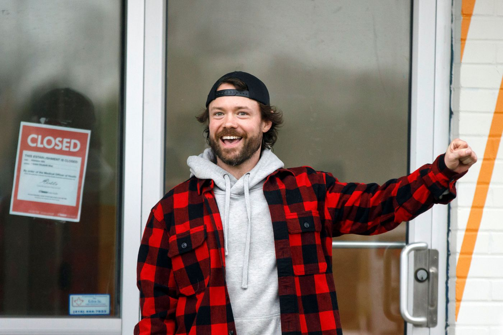

Ontario Police change Adamson BBQ Locks
November 30th, 2020
Don't be afraid to read the previous story to get caught up here. And yes, this is all from a few days ago.
BlogTO:
TDC_ARTICLE_START
The drama of Adamson BBQ's illegal opening in the face of stringent pandemic lockdown measures continues Thursday, with authorities moving in early this morning to change the locks on the eatery's doors in anticipation of proprietor Adam Skelly welcoming customers for a third day in a row.
The Etobicoke location of Skelly's restaurant has this week become a meeting place for those fervently protesting the forcible closure of non-essential businesses and other COVID measures after a year of never-before-seen financial hardship due to the health crisis and consequent government-led shutdowns.
The restaurateur publicized on social media that he was planning to open for business as usual on Tuesday morning, and after more than an hour of successfully doing so, law enforcement moved in, but didn't actually order the spot to shutter until after its planned closing time late in the afternoon.
He is also being investigated by the City for potential licensing, zoning, public health, Ontario Building Code and Ontario Fire Code issues.
Still, Skelly yesterday told the Toronto Sun, the only media outlet he's sanctioned to cover the ongoing saga, "I plan to have five times the meat for Thursday so I won’t run out."
As a result, Toronto police changed the locks on the establishment around 6 a.m. today to hopefully prevent Adamson from operating.
TDC_ARTICLE_STOP

Adam Skelly, Absolute Chad
Police. The Blue Antifa. Always ready to serve those who write their cheques. Which happens to be, not you Peasant.
Well, I mean you pay for that, but Police are like dogs. Unless you're the hand feeding them their Kibbles and Bits, or holding the leash, you're not their owner.
TDC_ARTICLE_START
Skelly arrived on the scene to speak with the cops two hours later, and posted an Instagram story to his 68.6k followers on the Adamson account that simply stated "need locksmith & other hands at Etobicoke ASAP."
TDC_ARTICLE_STOP
 Jesus this guys a legend. "Get the locksmith boyz, piggers put locks on my business."
TDC_ARTICLE_START
Mayor John Tory said in a press conference that he hopes law enforcement "throws the book" at Skelly, adding that he would whip out the concrete blocks the City famously used to block illicit cannabis dispensaries if it was up to him.
Jesus this guys a legend. "Get the locksmith boyz, piggers put locks on my business."
TDC_ARTICLE_START
Mayor John Tory said in a press conference that he hopes law enforcement "throws the book" at Skelly, adding that he would whip out the concrete blocks the City famously used to block illicit cannabis dispensaries if it was up to him.
Mayor John Tory
Ontario Premier Doug Ford, on the other hand, said during Skelly's first day of unlawful operations that he "wished" the business owner would follow the rules, but that he "can't get angry at any business person, they're hurting right now and they're struggling and they're doing everything they can to stay afloat."
He changed his tune Wednesday, saying in yesterday's provincial media briefing that Skelly was being irresponsible, ridiculous, and acting unacceptably.
"I was nice to the guy yesterday, but buddy, let me tell you something, you’re putting people’s lives in jeopardy," he said. "I always try to be nice the first time, but this guy is just totally ignoring public health officials."
TDC_ARTICLE_STOP

Ontario Premier Doug Ford
This is a simple part of an ongoing story, so there isn't much room for analysis. All you need to know is physiogonomy. Look at those creeps, then look at Adam Skelly.
Looks like a bro, talks like a bro, is a bro
The choice is clear.
Jesus this guys a legend. "Get the locksmith boyz, piggers put locks on my business."
TDC_ARTICLE_START
Mayor John Tory said in a press conference that he hopes law enforcement "throws the book" at Skelly, adding that he would whip out the concrete blocks the City famously used to block illicit cannabis dispensaries if it was up to him.